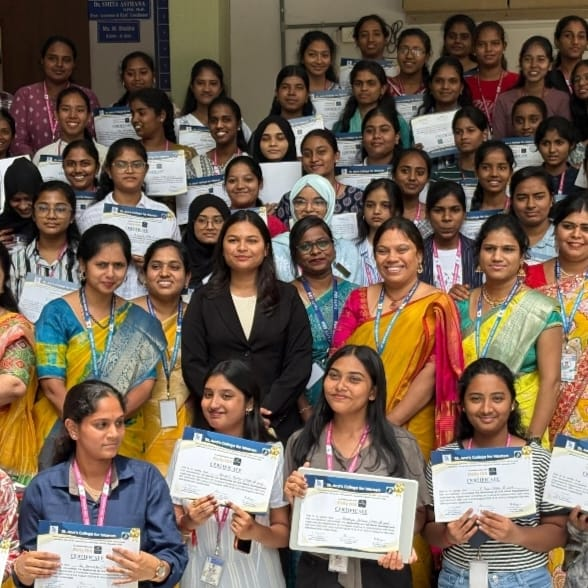
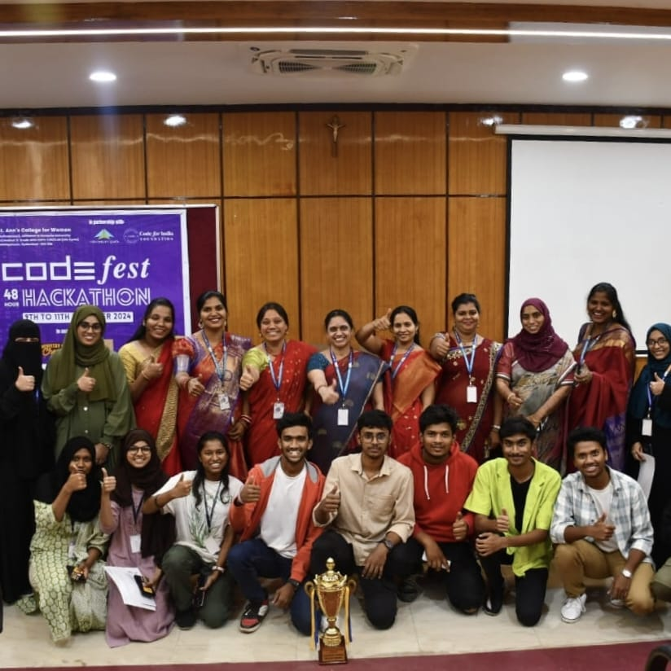
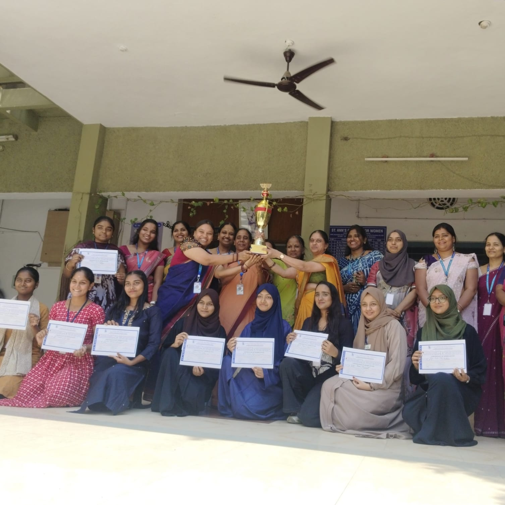

Gallery




About the Computer Science Department
- Established in 1998, the Computer Science Department has been at the forefront of academic excellence and innovation in the field of technology education.
- The department offers cutting-edge undergraduate programs like B.Sc. (MSCS, MSDS) and BCA, catering to a wide range of computing interests.
- It is powered by a highly qualified faculty with strong academic and industry experience who emphasize both conceptual clarity and practical application.
- The department is equipped with state-of-the-art laboratories including the Programming Lab and AI/ML Lab to provide hands-on training in emerging technologies.
- Students actively participate in national-level competitions, hackathons, and technical fests, consistently bringing home awards and recognition.
- Regular guest lectures, seminars, and bootcamps are conducted in collaboration with industry experts to bridge the gap between academia and the real world.
- The department fosters a research-oriented mindset by encouraging projects in areas like Web Development, Artificial Intelligence, Data Science, and Cybersecurity.
- Special emphasis is placed on career readiness, with students receiving training in coding, aptitude, soft skills, and internships.
- The department has a vibrant student club that organizes technical events, peer learning sessions, and inter-department competitions.
- It promotes a holistic development environment where young women are encouraged to become not just skilled developers but also ethical leaders in tech.